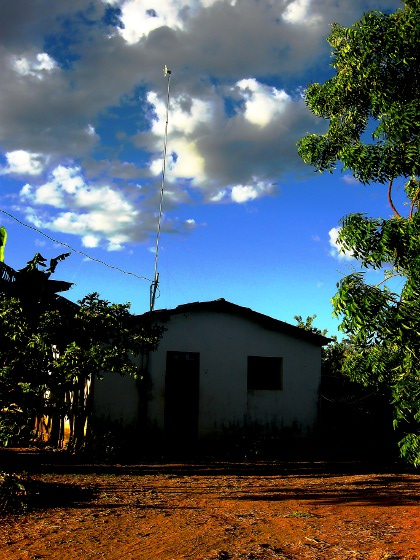
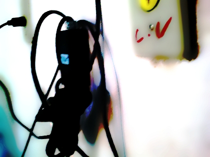
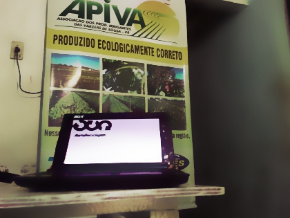
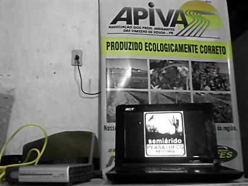

Orlando trouxe para lista mais um resultado das reverberações da CIGAC [5]: a instalação do equipamento que vai possibilitar conexão à rede na Associação dos Produtores Irrigantes das Várzeas de Sousa de Paraíba (APIVAS).
Colocamos algumas imagens do lote de agricultura familiar orgânica [6]

APIVAS trabalha com agricultura familar em zona rural, a 25 quilômetros do centro Sousa, onde não existia sinal de internet.

A ideia do projeto Presença e Interação Web, concebido pelo próprio Orlando, é conectar atividades de apropriação críticas de tecnologias às necessidades locais:
Inicialmente o projeto iria trabalhar com Internet 3g, mas dadas as limitações deste tipo de conexão decidimos estabelecer uma parceria com um provedor de Internet e arcar com os custos de instalação do equipamento para enviar o sinal direto da cidade e captar no local. Vale dizer que esta parceria foi agilizada em muito por conta da Cigac Semiárido, que mostrou para o parceiro local que vale à pena investir em nossas propostas e ações para o Semiárido. Estamos aqui em fase de ajuste do sinal e aguardando a liberação de recursos para darmos continuidade ao projeto.

